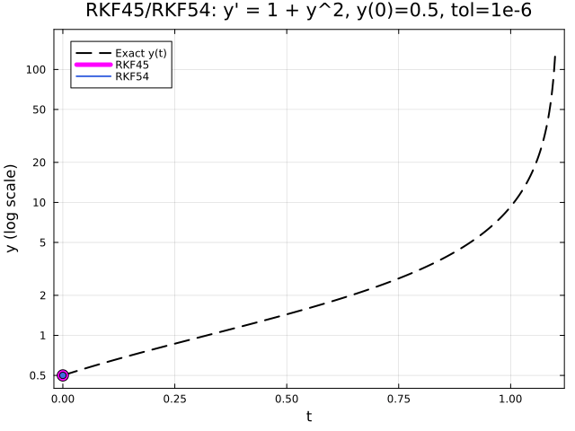
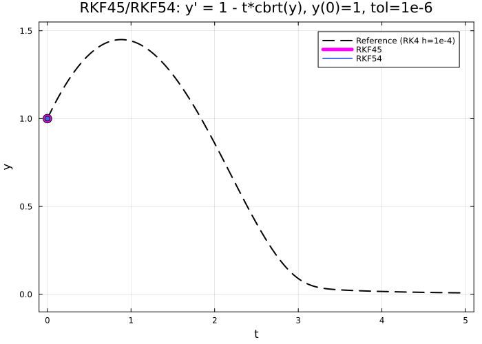

Runge-Kutta-Fehlberg Method
Source inspiration: (Mathew 2000-2019).
Description
The Runge-Kutta-Fehlberg method (RKF45) is an adaptive-step one-step solver for the initial value problem \(y' = f(t, y)\), \(y(t_0) = y_0\). At each step it computes embedded 4th- and 5th-order approximations from the same stage evaluations, estimates the local error from their difference, and adjusts the step size to meet a tolerance. From the current point \((t_j, y_j)\) and a trial step \(h\), the six stages are
\[ \begin{aligned} k_1 &= h\,f(t_j,\ y_j),\\ k_2 &= h\,f\!\left(t_j + \tfrac{1}{4}h,\ y_j + \tfrac{1}{4}k_1\right),\\ k_3 &= h\,f\!\left(t_j + \tfrac{3}{8}h,\ y_j + \tfrac{3}{32}k_1 + \tfrac{9}{32}k_2\right),\\ k_4 &= h\,f\!\left(t_j + \tfrac{12}{13}h,\ y_j + \tfrac{1932}{2197}k_1 - \tfrac{7200}{2197}k_2 + \tfrac{7296}{2197}k_3\right),\\ k_5 &= h\,f\!\left(t_j + h,\ y_j + \tfrac{439}{216}k_1 - 8k_2 + \tfrac{3680}{513}k_3 - \tfrac{845}{4104}k_4\right),\\ k_6 &= h\,f\!\left(t_j + \tfrac{1}{2}h,\ y_j - \tfrac{8}{27}k_1 + 2k_2 - \tfrac{3544}{2565}k_3 + \tfrac{1859}{4104}k_4 - \tfrac{11}{40}k_5\right), \end{aligned} \]
and the 4th- and 5th-order updates are
\[ \begin{aligned} y_4 &= y_j + \tfrac{25}{216}k_1 + \tfrac{1408}{2565}k_3 + \tfrac{2197}{4104}k_4 - \tfrac{1}{5}k_5,\\ y_5 &= y_j + \tfrac{16}{135}k_1 + \tfrac{6656}{12825}k_3 + \tfrac{28561}{56430}k_4 - \tfrac{9}{50}k_5 + \tfrac{2}{55}k_6. \end{aligned} \]
The difference \(|y_5 - y_4|\) estimates the local error of \(y_4\). It shrinks like \(h^5\), so \(|y_5 - y_4|/h\) is an error per unit step that shrinks like \(h^4\). A step is accepted when \(|y_5 - y_4|/h \le \varepsilon\), where \(\varepsilon\) is the requested tolerance; RKF45 then carries \(y_{j+1} = y_4\) forward, and the variant RKF54 carries \(y_5\). Accepted or not, the next step size is
\[ h_{new} = s\,h, \qquad s = 0.84\left(\frac{\varepsilon h}{|y_5 - y_4|}\right)^{1/4}, \]
clamped to at most \(h_{max}=0.25\) (and at least \(h_{min}=10^{-6}\), which neither case reaches), and a rejected step is retried from the same point. The factor \(0.84\) rounds Mathews’ \(2^{-1/4}\); if \(|y_5 - y_4|\) scaled exactly like \(h^5\), the new step would bring \(|y_5 - y_4|/h\) to about \(\varepsilon/2\).
The method needs \(f\) continuous and Lipschitz in \(y\) near the solution, so that the solution is unique, and \(f\) smooth enough for the orders below. In Case 2, \(f = 1 - t\sqrt[3]{y}\) is not differentiable at \(y = 0\), but the solution stays above \(y(5) \approx 0.00812\).
In general, if \(f\) has continuous partial derivatives through order 5 near the solution (which makes \(y \in C^6\)), the 4th- and 5th-order formulas have local errors \(O(h^5)\) and \(O(h^6)\), so for small \(h\), \(y_5 - y_4\) is dominated by the error of \(y_4\); with fixed steps the global errors are \(O(h^4)\) and \(O(h^5)\). On Case 1’s problem, halving one step at \(t = 0\) from \(0.025\) to \(0.0125\) divides \(|y_5 - y_4|\) by \(30.7\) and the errors of \(y_4\) and \(y_5\) by \(27.9\) and \(65.6\), near \(2^5 = 32\) and \(2^6 = 64\). The animations show the step-size controller, not these rates.
The tolerance bounds local, not global, error. In Case 1 the accepted \(|y_5 - y_4|\) sum to \(5.6\times10^{-7}\), yet RKF45 ends \(4.5\times10^{-3}\) from \(y(1.1) = 139.88\): near the pole of \(\tan(t + \arctan 0.5)\) at \(t \approx 1.1071\), errors grow up to \(1.6\times10^{4}\)-fold by \(t = 1.1\), but the individually grown estimates give only \(2.2\times10^{-3}\). The estimate needs small \(h\): the step \(h = 0.136\) from \(t = 0.1\) underestimates its error 10.5-fold, causing nearly half the final error (\(h = 0.25\) from \(t = 0\): 34-fold, Animations introduction).
The Euler, Heun, Taylor Series, Runge-Kutta, Adams-Bashforth-Moulton and Milne-Simpson pages solve Case 2’s problem with fixed steps, and Adaptive Simpson’s Rule uses the same compare-two-estimates idea for integrals.
Animations
The first animation below reconstructs the legacy Example 1 setup from the Mathews module: \(y' = 1 + y^2\), \(y(0)=0.5\), on \([0,1.1]\). The dashed black curve is the exact solution \(y(t)=\tan\!\left(t + \arctan(0.5)\right)\). The step controller is not the module’s: its RKF45 and RKF54 subroutines accept a step when \(|y_5 - y_4| < \varepsilon\) or \(h < 2h_{min}\), start from \(h=0.25\) (here \(0.1\)) and have a minimum step size \(h_{min}=0.001\). At the same \(\varepsilon=10^{-6}\) they take 120 points; the step reaches \(h_{min}\) at \(t \approx 1.055\), and the last 8 of the 119 steps, from \(t \approx 1.092\) on, are accepted only by the \(h < 2h_{min}\) condition. They end with errors of \(7.0\times10^{-2}\) (RKF45) and \(6.5\times10^{-2}\) (RKF54) at \(t=1.1\), against \(4.5\times10^{-3}\) and \(3.2\times10^{-3}\) here (Case 1). Most of that difference is the first step of \(0.25\): its error estimate, \(1.7\times10^{-7}\), passes either acceptance test, but its true error is \(5.6\)–\(5.7\times10^{-6}\), which this problem magnifies about \(1.1\times10^{4}\) times by \(t=1.1\); started from \(h=0.25\), the controller used here ends with errors of \(6.6\times10^{-2}\) and \(6.3\times10^{-2}\).
Because the recovered archive did not include legacy RKF animated GIF portals for this topic, the first animation is reconstructed from the worked-example equations and plot behavior in the module links/images. The module’s Examples 6–8, which solve a second problem, the Riccati equation \(y' = t^2 + y^2\), with the module’s RKF45 and RKF54 subroutines (Example 6), compare those results with its closed-form Bessel-function solution (Example 7) and derive that solution with Mathematica’s DSolve (Example 8), are not animated here.
The second animation uses the same IVP shown on the Euler’s Method page (in both its forward Euler and modified Euler cases) and on the Runge-Kutta, Taylor Series and Adams-Bashforth-Moulton pages: \(y' = 1 - t\sqrt[3]{y}\), \(y(0)=1\), on \([0,5]\), with a dashed high-accuracy reference trajectory from fixed-step RK4 at \(h=10^{-4}\). This IVP is not one of the module’s examples; it is used here so that this page can be compared with those pages.
Case 1 - Adaptive RKF45 vs RKF54, \(y' = 1 + y^2\), \(y(0)=0.5\), \(t \in [0,1.1]\)
Behavior: Both adaptive traces follow the exact solution to within a relative error of \(3.3\times10^{-5}\) all the way to \(y(1.1)=139.88\), just short of the pole of \(\tan\) at \(t=1.1071\); the logarithmic \(y\)-axis keeps the whole run in view. The step shrinks from \(0.136\) near \(t=0.1\) to \(5\times10^{-5}\) near \(t=1.1\), so 187 of the 259 computed points lie in \(t \ge 1.05\) and the marker slows as it nears the pole (each frame adds up to four accepted steps). RKF45 and RKF54 share the error estimate and the step rule, so their steps agree to within \(0.05\%\) and the curves coincide (blue over magenta). They differ only in whether \(y_4\) or \(y_5\) is carried forward, and RKF54 ends closer to the exact value: errors \(3.2\times10^{-3}\) against \(4.5\times10^{-3}\) at \(t=1.1\).

Case 2 - Adaptive RKF45 vs RKF54, \(y' = 1 - t\sqrt[3]{y}\), \(y(0)=1\), \(t \in [0,5]\)
Behavior: RKF45 and RKF54 match the dashed reference to within \(7\times10^{-7}\) at every accepted point. The controller takes the maximum step \(h=0.25\) over the hump (\(0.1 \le t \le 1.35\)) and keeps \(h\) between \(0.189\) and \(0.25\) until \(t \approx 2.4\), past the steepest point (\(y'=-0.930\) at \(t=2.19\)). It then cuts the step as the solution bends into its flat tail: below \(0.04\) from \(t=3\) on, and the smallest step it chooses is \(0.027\), near \(t=3.27\). The corners visible on the hump are the straight segments drawn between accepted points \(0.25\) apart (up to \(0.0091\) below the curve, near \(t=0.48\)), not integration error. These steps are set by the tolerance, not by stability: \(\partial f/\partial y=-t/(3y^{2/3})\) reaches \(-41.3\) at \(t=5\), so for fixed steps longer than about \(h=0.0732\), \(h\,|\partial f/\partial y|\) would exceed the 4th-order RKF update’s stability limit \(3.02\) before \(t=5\), while every accepted step here keeps \(h\,|\partial f/\partial y|\) below \(1.3\).
